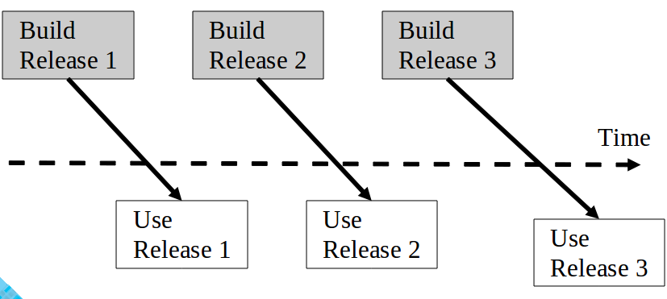

| Version | Date | Who | Comment |
|---|---|---|---|
| v1.0 | 09/10/2013 | Vincenzo Marconi | Setup Document and Formatting. |
| v1.1 | 09/10/2013 | Vincenzo Marconi | Filled out the Project Overview to the Project Team Organization. |
| v1.2 | 09/13/2013 | Vincenzo Marconi | Filled out the Deliverables to Tools and Computing Environment. |
| v1.3 | 09/14/2013 | Vincenzo Marconi | Filled out the rest of the Document. |
| v1.4 | 09/16/2013 | Vincenzo Marconi | Adjusted the Project Team Organization. |
| v1.5 | 09/16/2013 | Vincenzo Marconi | Adjusted the Software Life Cycle Model. |
| v1.6 | 09/18/2013 | Vincenzo Marconi | Adjusted the Configuration Management. |
| Name | Number | Web-Page | |
|---|---|---|---|
| Vincenzo Marconi | vincenzorm117@knights.ucf.edu | (954)778-0251 | LINK |
| Rachel Kinner | rachel.kinner@knights.ucf.edu | (321)345-3215 | LINK |
| Ronald Hyatt | enishi@knights.ucf.edu | (321)298-0459 | LINK |
| Matt Bald | matt.e.bald@gmail.com | (941)914-4487 | LINK |
| Brian McCormick | mccor140@knights.ucf.edu | (850)363-1052 | LINK |
| Josh Barnett | jbarnett@knights.ucf.edu | (612)709-3144 | LINK |
The Recipe Finder project is aimed at developing a Recipe finding and browsing application that provides better more specific services than that of the already existing epicurious system. We aim at creating a simple easy to use interface that connects the busy college student with a real and broad selection of foods they can prepare or craft. While students can select the parameters to find a meal that suits their time and taste, the system provides nutritional facts regarding the students options and warnings about common allergens.
| Name | Role |
|---|---|
| Vincenzo Marconi |
|
| Josh Barnett |
|
| Ronald Hyatt |
|
| Matt Bald |
|
| Rachel Kinner |
|
| Brian McCormick |
|
| Artifact | Due Dates (some will have multiple deliveries) |
|---|---|
| Project Management Report | Every Wed. |
| ConOps | 09/25/2013 |
| Project Plan | 09/25/2013 |
| SRS | 09/25/2013 |
| High-Level Design | 10/28/2013 |
| Detailed Design | 10/28/2013 |
| Test Plan | 09/25/2013 |
| User's Manual | 11/25/2013 |
| Final Test Results | 11/25/2013 |
| Source, Executable, Build Instructions | 11/25/2013 |
| Project Legacy | 11/25/2013 |
We are using a Phased Development Life Cycle Model because we believe that building the individual components of application will be built one by one and implemented into production. We will begin with very primitive functionality of just a search with a small GUI and gear that towards a more comfortable and flexible system that provides interacting with the output information (See Below for Functional Units).

Every wednesday we will discuss individual and group progress, what it means and what it may lead to.
Fridays will be another work focused day, but towards the end of the meeting we will discuss how everybody is doing and what we may do to improve either to balance workload, knit wounds, etc.
The project manager, Vincenzo, will make sure these things are happening and log it in a 1-2 paragraph description once a week.
Take another look
Project Broken down into stages/packages: (Each of these categories will occur asynchronously)
Database Development (Every week get 10-12 recipes developed)
This database will contain information on k types of text information, and pictures. (Discuss how many we should have)
Main Application Features will be built in the order:
Search, Advanced Search, and Browse. Anything after will be Would-Like-to-have's
Search:
The technical progress of the project will be measured by three primary metrics. The first progress metric will be the percentage of completed requirements per the Software Requirements Specification document. The second technical progress metric will be the completion of standard UML diagrams such as the use case diagram, class diagram and sequence diagram. The technical progress will also be measured by the completion of each development iteration following the phased development software life cycle model. These iterations will fully develop one of operational features as outlined by the Concept of Operations.
The entire team will meet weekly to discus individual time and activity, individual status information, individual issues and problems, and individual defects every Wednesday. Each week, the project manager will: examine the technical content of the work done to date; examine the technical progress metrics; consider the QA results; reassess the potential project risks; and take corrective action if necessary. The project manager will issue a Project Management Report on the schedule as indicated in the deliverables section above. At a minimum, the Project Management Report will be generated every two weeks and will include the following information: 1 sentence description of overall status, 1 or 2 sentence of any planned changes to the project plan, graph of planned vs actual time, graph of planned vs actual for each technical progress metric, updated PERT chart.